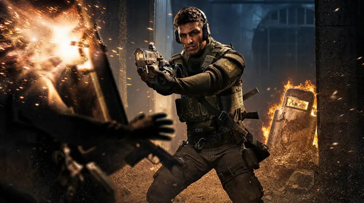

Noor
Rôle
Anti-intrusion / Contrôle de zone
CompétenceHorus Lance : projette un dispositif qui se fixe à une surface ou à un bouclier puis crée une zone de flammes.
GadgetsGrenades à percussion, charges explosives
Attaquant